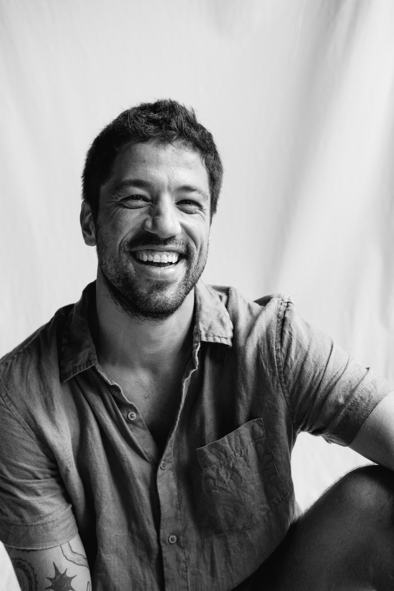

Profissional com mais de 15 anos de experiência em criação e gestão de projetos musicais e audiovisuais, liderando equipes de até 60 profissionais e combinando visão criativa com capacidade executiva para desenvolver negócios e talentos. Especialista em plataformas digitais, modelos B2C e curadoria de artistas, atuou como cofundador e diretor em startups e estúdios de produção, estabelecendo parcerias estratégicas e expandindo marcas no setor de música e tecnologia. Possui histórico comprovado de transformar ideias em resultados por meio de planejamento, negociação de contratos e análise de dados. Sua trajetória é guiada pela combinação entre sensibilidade criativa e estratégia, em projetos que unem autenticidade, colaboração e propósito, transformando experiências artísticas em conexões reais e duradouras.
I have 15+ years of experience in music and audiovisual projects, leading teams of up to 60 people and combining creative vision with strong execution to develop artists and businesses. I have worked as co-founder and director in startups and production studios, building strategic partnerships and expanding brands in the music and technology ecosystem. I have a solid track record of turning ideas into results through planning, contract negotiation and data-driven decision making. My trajectory is guided by the combination of creative sensitivity and strategy, in projects that value authenticity, collaboration and long-term impact.
Português (nativo) · Inglês (fluente) · Espanhol (intermediário) · Italiano (intermediário) · Grego (básico)
Portuguese (native) · English (fluent) · Spanish (intermediate) · Italian (intermediate) · Greek (basic)